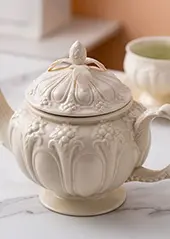
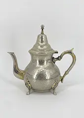
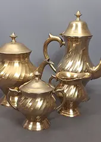
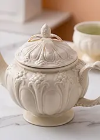
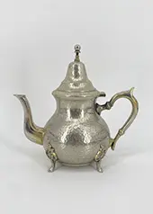
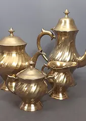

Diese alten Teekannen vereinen handwerkliche Qualität, zeitloses Design und gelebte Geschichte. Ob aus Porzellan, Keramik oder Metall, jede Kanne überzeugt durch ihre individuelle Form, feine Details und eine charakteristische Patina, die ihren einzigartigen Charme ausmacht. Als funktionales Objekt oder dekoratives Sammlerstück bringen antike Teekannen Ruhe und Eleganz auf den Tisch, ins Regal oder in die Vitrine. Sie erzählen von Teekultur, Geselligkeit und stillen Ritualen vergangener Zeiten.
Jede Teekanne ist ein Unikat und wurde sorgfältig geprüft. Kleine Unregelmäßigkeiten und feine Haarrisse unterstreichen die Authentizität und den besonderen Charakter dieser Stücke. Dadurch gibt es jedes Teil auch nur einmal bei uns. Im Moment haben wir eine kleine Auswahl an antiker Teekannen da, dies kann sich aber schnell ändern, am besten schaut ihr regelmäßig bei uns vorbei.